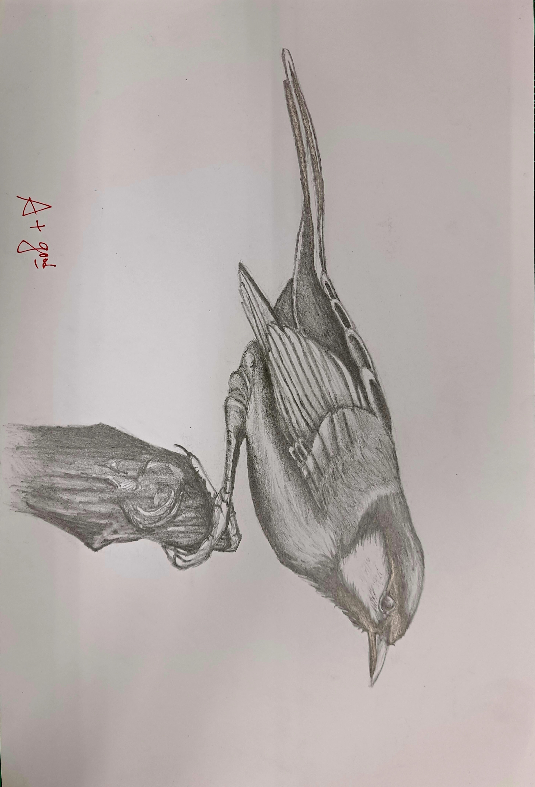

平時作業
高中到大一之後就把筆都塞抽屜
2022
0729
文字幾乎用GPT生成
這幅作品運用了狼與枯木的結合來傳達自然與生命的微妙聯繫。
狼的表情專注而靜謐，似乎在凝視著眼前的沙漏燈，象徵著時間的流逝與生命的脆弱。
這幅畫表達了對生命、時間和死亡的思考，試圖讓觀者在靜謐的氛圍中體悟生命的意義。

這幅作品將樹枝與折紙結合，
象徵自然與人造物的和諧關係。
透過簡潔的線條與質感對比，
展現自然的純粹與人造的秩序。
文字幾乎用GPT生成
2022
0620
2021
0901
文字幾乎用GPT生成
本設計運用鉛筆素描的細膩筆觸，描繪出人物細緻的表情與紋理。
以花朵和植物元素環繞，賦予畫面柔和的自然氣息，象徵生命的成長與延續。
人物表情安靜且帶有深思，整體風格純粹且富有詩意，傳達出內心的寧靜與思考。

這幅作品將樹枝與折紙結合，
象徵自然與人造物的和諧關係。
透過簡潔的線條與質感對比，
展現自然的純粹與人造的秩序。
文字幾乎用GPT生成
2022
0817
2020
0714
文字沒有用GPT生成
這幅作品將樹枝與鳥結合，說實話就是高中作業而已，我也忘記是甚麼鳥
聯絡方式
Instagram :@yang_chien._.9
IG連結:https://www.instagram.com/yang_chien._.9/profilecard/?igsh=MXFtcTA4dzFwdDd3dg==
Facebook:閔茜
FB連結:https://www.facebook.com/profile.php?id=100013455575253
可以的話請不要聯絡